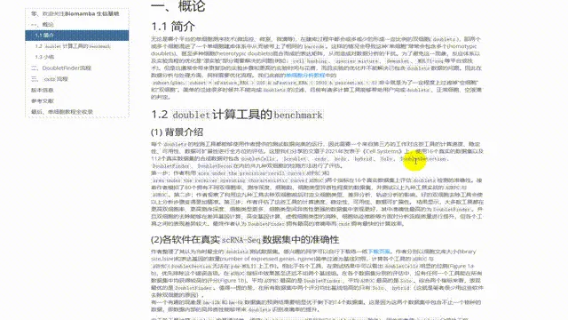

R语言scRNA-Seq双细胞过滤手册
原文：https://mp.weixin.qq.com/s?__biz=MzAwMzIzOTk5OQ==&mid=2247537859&idx=3&sn=84cc128e093fac63a5a97421dfe8be53&chksm=9b3c2d93ac4ba4859ab08e62421ff663b45cf0ddfa809f918b9d40cbd9c2b2b8b9f0779f05e9#rd 合集：单细胞教程全收录

双细胞过滤学习手册

 无论是哪个平台的单细胞测序技术(微流控、微室、微滴等)，在建库过程中都会或多或少的形成一定比例的双细胞(doublets)，即两个或多个 细胞混进了一个单细胞建库体系中从而被带上了相同的barcode 。这样的情况会导致这种”单细胞”常常会包含多个(homotypic doublets)、甚至多种细胞(heterotypic doublets)混合而成的表达矩阵，从而造成对数据分析的干扰。为了避免这一现象，反应体系以及实验流程的优化是”湿实验”部分需要解决的问题(例如：cell hashing、species mixture、demuxlet、MULTI-seq等平台或技术)。但是这通常会带来更复杂的实验步骤和更高的实验时间与花费，而且实验的优化并不能解决已包含doublets数据的问题。因此在数据分析与处理 方面，同样需要优化流程。简单的过滤很多时候并不能完成doublets的过滤，目前有诸多计算工具能够帮助用户完成doublets、正常细胞、空液滴的判定。本次学习手册，我们先从绪论 说起，带大家一同比较doubletCells, Scrublet, cxds, bcds, hybrid, Solo, DoubletDetection, DoubletFinder等工具在双细胞预测表现中的优劣(benchmarking)，再进行DoubletFinder与cxds工具的实操流程讲解 。不熟悉分析过程的同学可以先行学习：scRNA-Seq学习手册Seurat V4修订版另外本手册涉及到的包比较占内存，硬件跟不上的同学可以参考：足够支持你完成硕博生涯的生信环境
分析图片集锦
无论是哪个平台的单细胞测序技术(微流控、微室、微滴等)，在建库过程中都会或多或少的形成一定比例的双细胞(doublets)，即两个或多个 细胞混进了一个单细胞建库体系中从而被带上了相同的barcode 。这样的情况会导致这种”单细胞”常常会包含多个(homotypic doublets)、甚至多种细胞(heterotypic doublets)混合而成的表达矩阵，从而造成对数据分析的干扰。为了避免这一现象，反应体系以及实验流程的优化是”湿实验”部分需要解决的问题(例如：cell hashing、species mixture、demuxlet、MULTI-seq等平台或技术)。但是这通常会带来更复杂的实验步骤和更高的实验时间与花费，而且实验的优化并不能解决已包含doublets数据的问题。因此在数据分析与处理 方面，同样需要优化流程。简单的过滤很多时候并不能完成doublets的过滤，目前有诸多计算工具能够帮助用户完成doublets、正常细胞、空液滴的判定。本次学习手册，我们先从绪论 说起，带大家一同比较doubletCells, Scrublet, cxds, bcds, hybrid, Solo, DoubletDetection, DoubletFinder等工具在双细胞预测表现中的优劣(benchmarking)，再进行DoubletFinder与cxds工具的实操流程讲解 。不熟悉分析过程的同学可以先行学习：scRNA-Seq学习手册Seurat V4修订版另外本手册涉及到的包比较占内存，硬件跟不上的同学可以参考：足够支持你完成硕博生涯的生信环境
分析图片集锦
-Biomamba

所见即所得
学习手册可直接用浏览器打开：

下载的资料内容：
 解锁前需阅读：龙年订阅须知
解锁前需阅读：龙年订阅须知
文末还可解锁以下内容


龙年订阅合集已完结，联系客服微信[Biomamba_zhushou]可以以￥119获取全部资料(包括今年后面更新的内容)。当然，付费不是目的，以下资料都可以通过转发领取(更推荐这种方式)。
龙年订阅须知 单细胞Figure 1常见图表 快速上手Seurat V5 机器学习基础手册 scRNA-Seq学习手册Seurat V4修订版 Bulk RNASeq| 转录组实战
《NC》代码复现| scRNA-seq揭示人纤维化皮肤病中的成纤维细胞异质性和间充质成纤维细胞增加
《Nature Communications》| scRNA-seq揭示头颈癌早期转移过程中潜在的免疫逃避机制
代码复写《Developmental Cell》|利用scRNA-seq对新生儿~成人肝脏发育和成熟的时间分析

学习手册下载链接：
本推送教程、测试文件下载链接：
https://pan.baidu.com/s/1_UCwVhC-grl9rg_zk1_xIQ
提取码请联系客服微信获取：


如何联系我们

 留一个领取资料、免费两周学习版服务器的微信号[Biomamba_zhushou]，方便各位随时交流。同时我们也构建了交流群矩阵，欢迎大家入群讨论。
大家可以阅读完这几篇之后添加给生信入门初学者的小贴士如何搜索公众号过往发布内容
留一个领取资料、免费两周学习版服务器的微信号[Biomamba_zhushou]，方便各位随时交流。同时我们也构建了交流群矩阵，欢迎大家入群讨论。
大家可以阅读完这几篇之后添加给生信入门初学者的小贴士如何搜索公众号过往发布内容
已有生信基地联系方式的同学无需重复添加

 您点的每个赞和在看，我都认真当成了喜欢
您点的每个赞和在看，我都认真当成了喜欢